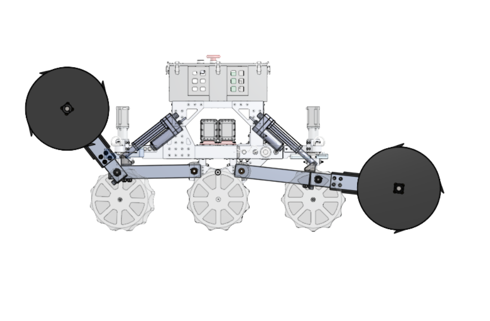
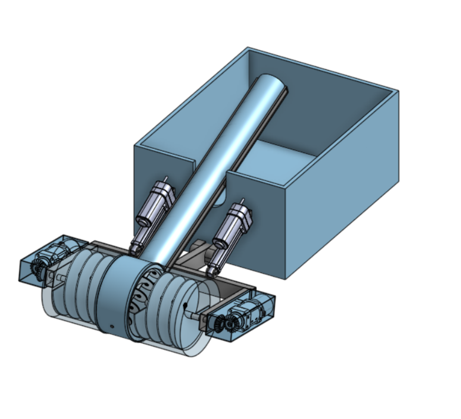
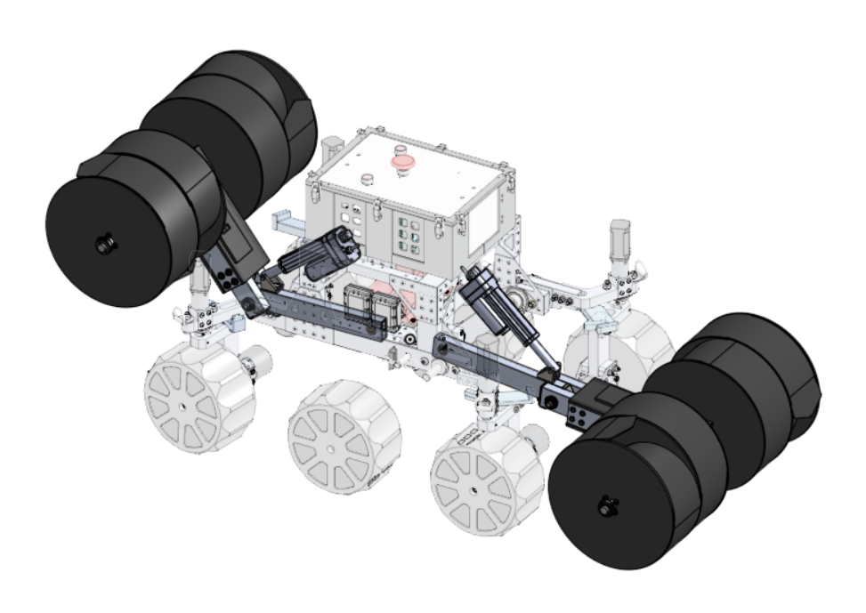
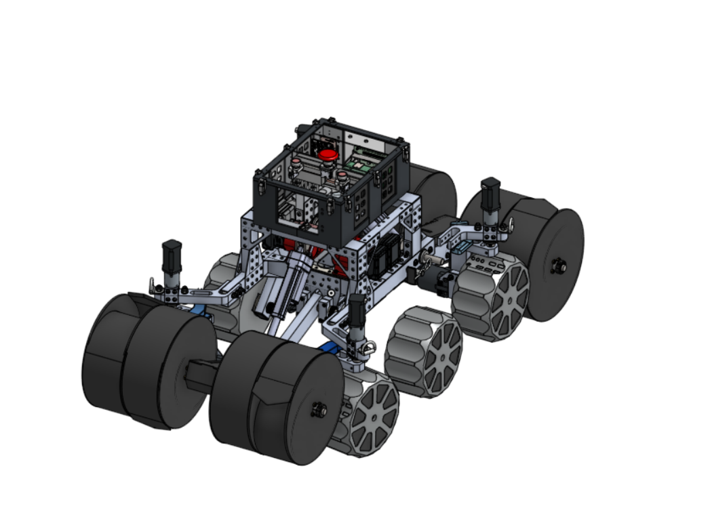

Edmund Makowski-Scott
Mechanical engineering student at the Milwaukee School of Engineering with a minor in aerospace engineering. I spend most of my time designing dig systems for lunar rovers and testing them.
Below are some examples of my work
MSOE NASA Lunabotics: excavation system

- Project
- NASA Lunabotics rover, excavation system
- Role
- Lead excavation design engineer
- School
- Milwaukee School of Engineering, class of 2029
- Result
- 130% more total regolith capacity
NASA's Lunabotics Challenge is a competition where university teams build a rover that drives across simulated lunar terrain, digs regolith, and hauls it to a collection point. MSOE's team has about 70 members. I lead the excavation subsystem: the hardware that digs and collects material.
I designed, modeled, tested, and integrated the dig system, and as subsystem lead I worked out how it mounts to the chassis and shares space, power, and control with the rest of the rover.
How my team and I designed it
- Researched excavation mechanisms used in extraterrestrial applications before choosing a direction.
- Modeled designs in Onshape and SolidWorks, and ran FEA on structural parts.
- Used discrete element modeling (DEM) to study how the dig system moves granular material.
- Built test stands and tested multiple physical designs in our regolith simulant pit, then kept the best performer.
- Competed with the rover in NASA's international competition against other collegiate teams.
Below are more examples of dig systems I designed.



Team leadership and systems engineering
I am also the team's secretary. I handle HR for the team, and connect the president, vice president, and project manager with the subsystem leads. We follow NASA's systems engineering approach, so my role is to keep system requirements and interfaces moving between subsystems. I also work with the university and outside sponsors on funding and component donations.
Skills and software
- Design and analysis
- Onshape, SolidWorks, MATLAB, finite element analysis (FEA), discrete element modeling (DEM)
- Systems engineering
- NASA systems engineering approach, verification and validation, project management
- Fabrication
- Machining, CNC, additive manufacturing, rapid prototyping, soldering, mechanical repair
About
I grew up in Milwaukee and study mechanical engineering with an aerospace minor at the Milwaukee School of Engineering. I graduate in 2029 and am pursuing an education in engineering due to my love for better understanding how the world around me works.
Before college I spent a few years as a sailing instructor and boat repairman until I eventually had the opportunity to be a deckhand and navigator on the tall ship Denis Sullivan, sailing the Atlantic and the Caribbean, while teaching the physics of sailing.
At MSOE I am also a head curriculum developer in the Honors Program, where I work with the Wisconsin Department of Corrections and Wisconsin Department of Justice to design STEM classes for incarcerated individuals around Wisconsin.
Finally, I also spend my time at MSOE working for the CREATE Institute as a Student Fellow. I teach engineering students how to use 3D printers, machining equipment, and other common engineering skills.
Contact
- Emailmakowski-scotte@msoe.edu
- LinkedInlinkedin.com/in/edmund-makowski-scott
- GitHubgithub.com/EdmundMakowski-Scott